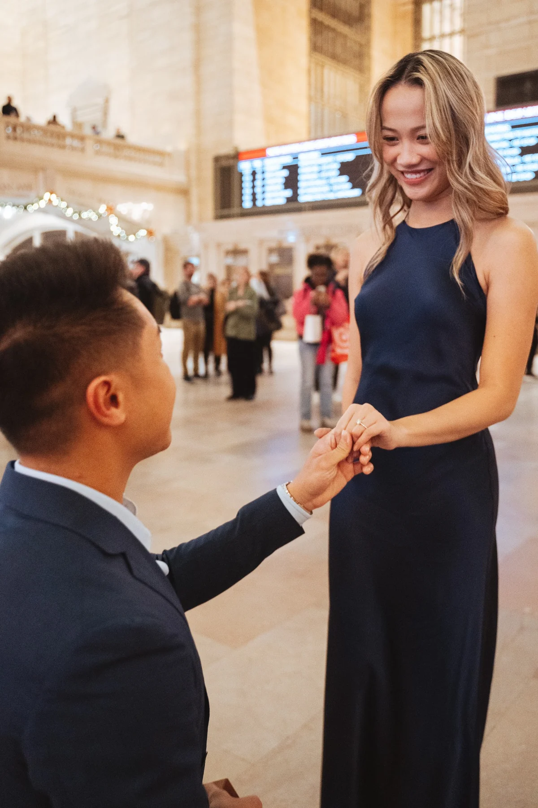
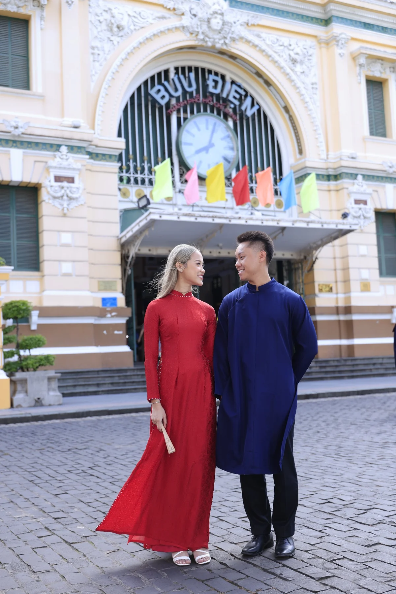
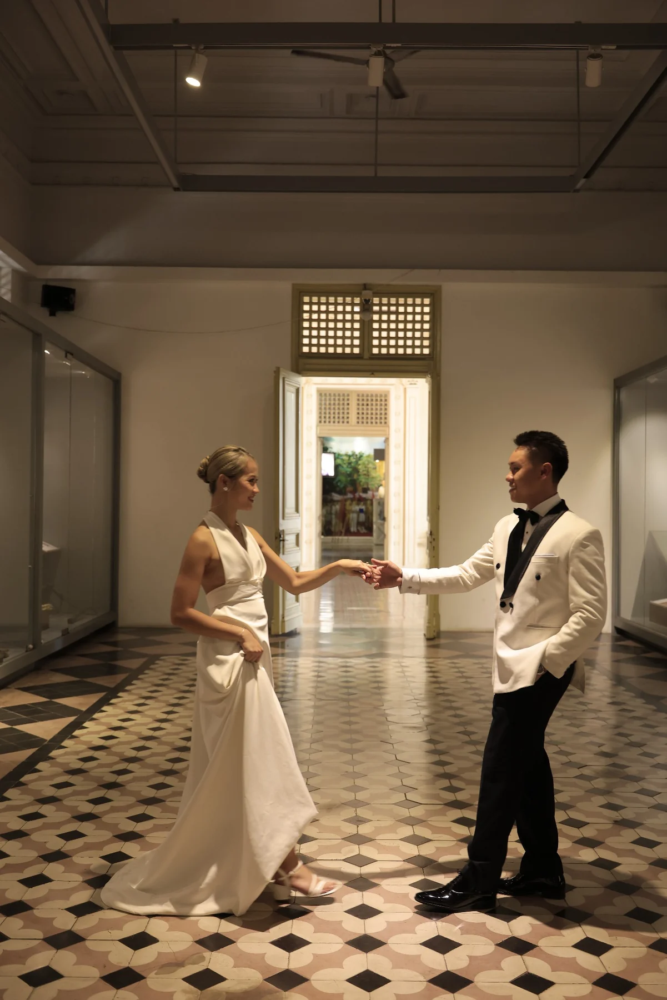

Nuptial Mass
Christ the King Catholic Church
1112 Eagle Drive
Fort Worth, Texas 76111
Dress Code: Black Tie Optional
View mapTogether with their families
October 24, 2026
Tap the seal to open
Together with our families
we invite you to celebrate the beginning of our forever
Wedding Day
Christ the King Catholic Church
1112 Eagle Drive
Fort Worth, Texas 76111
Dress Code: Black Tie Optional
View mapDallas Museum of Art
Sculpture Garden
1717 North Harwood Street
Dallas, Texas 75201
Dinner and dancing to follow.
View mapKILO Coffee
6600 Snider Plaza
Dallas, Texas 75205
Join us as the celebration continues.
View mapKindly reply by
Our RSVP form will live here. It can collect guest names, attendance, meal selections, dietary restrictions, and answers for each invited event.
A sacred celebration
Whether this is your first Catholic wedding or one of many, we are grateful to celebrate this sacred moment with you.
The ceremony will include the Liturgy of the Word, the celebration of marriage, and the Liturgy of the Eucharist. The Mass will last approximately 60–75 minutes.
Catholics who are properly disposed are invited to receive Communion. Guests of other faiths are warmly welcome to remain seated or come forward with arms crossed for a blessing.
Please arrive 20–30 minutes early so you have time to park and be seated. The Nuptial Mass will begin promptly at 2:00 PM.
Cocktails, dinner & dancing
Cocktail hour begins at 6:00 PM in the Dallas Museum of Art Sculpture Garden. Dinner and dancing will follow beneath the trees.
Helpful details
Black tie optional — with a touch of whimsy! Think colorful spring or summer garden party, just in October. We encourage you to embrace color, florals, and elegant, playful details. That special dress or suit you’ve been saving for the perfect occasion? This is it! Above all, wear something that makes you feel your best and ready to celebrate with us.
As our ceremony will take place in a Catholic church, we kindly ask that your attire be respectful of the sacred setting. We also ask that white and ivory be reserved for the bride.
Please plan to arrive 20–30 minutes early to allow plenty of time to park and find your seat. The Nuptial Mass will begin promptly at 2:00 PM, and we kindly ask that all guests be seated before the ceremony begins.
Like many Catholic weddings, there will be a little “Catholic gap” between the Nuptial Mass and cocktail hour. You’re welcome to use this time to explore the Dallas Museum of Art before the reception begins!
General museum admission is complimentary, but the museum asks visitors to reserve a free admission ticket. This ticket is only for visiting the museum during the gap and is not required for our wedding reception.
Transportation will not be provided. Guests will need to arrange transportation to Christ the King Catholic Church and from the church to the Dallas Museum of Art for the reception.
Church: Complimentary parking is available on-site, with plenty of spaces for guests.
Reception: Parking at the Dallas Museum of Art is paid. Guests may use the museum’s parking garage or nearby metered street parking. We recommend allowing a little extra time to park before heading inside.
Yes! Children and plus-ones have already been included in our guest count. When you RSVP, you’ll see everyone included with your invitation. We kindly ask that you RSVP for each guest who will be attending so we can plan accordingly.
Absolutely! All of our wedding guests are invited to keep the celebration going with us at the after party. It is completely optional, so feel free to join us if you’re up for a little more fun after the reception! The after party begins at 10:30 PM.
From New York to Saigon
A glimpse into the memories that brought us here.



